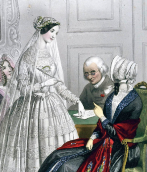
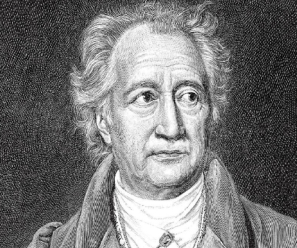
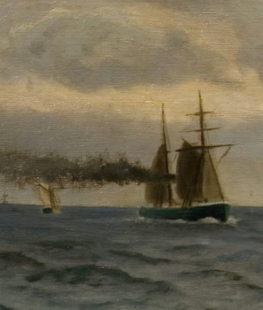

을유년
1945년 12월 1일
乙酉文化社
1945년 12월 1일에 창립한 을유문화사는 격동의 세월 속에서도 최초의 창립 정신을 이어왔습니다.
이달의
도서
을유문화사에서 발간한 도서목록입니다.


시리즈
을유문화사의 연작 미리보기 입니다.
-
을유세계문학전집
136권. 오노레 드 발자크, 『결혼 계약』
프랑스의 대문호이자 90여 편에 이르는 장편 소설로 인간극 이라는 거대한 세계를 구축한 발자크는 풍속의 역사가로 불릴 정도로 다양한 주제를 작품에 담았다.특히 돈과 법은 발자크 소설의 주요 테마다. 소설로 인간극 이라는 거대한 세계를 구축한 발자크는 풍속의
-
#3. 통제할 수 있는 것과 통제해야 하는 것
#3. 통제할 수 있는 것과 통제해야 하는 것
내가 모든 것을 통제할 수 없더라도 어려움 속에서도 내 삶에 선한 영향력을 발휘할 수 있으며, 그렇게 함으로써 다른 사람들이 나를 자주 찾을 정도로 내가 매력적인 사람으로 남을 수 있음을 믿는 것이다. 어려움 속에서도 내 삶에 선한 영향력을 발휘할 수 있으며
-
 #5. 내려놓고 있는 그대로 받아들이기
#5. 내려놓고 있는 그대로 받아들이기#5. 내려놓고 있는 그대로 받아들이기
내려놓는 것에서 행복을 얻는 것은 삶의 기술이 된다. 하지만 간과해서는 안 되는 것이 있다.즉 우리가 내려놓는 것은 점점 많아질 것이며, 점점 적어지기 때문에 그만큼 더욱 소중해질 것이라는 점이다. 우리가 내려놓는 것은 점점 많아질 것
-
을유세계문학전집
132권. 요한 볼프강 폰 괴테, 『서동시집』
서동시집에서 괴테의 눈에 비친 동방 시인들은 낙천적이고 현세 지향적이지만 궁극적으로는 깊은 동경심으로 가득 차 있고,지상에 속한 대상에게서 영원한 것을 이끌어 내는 존재들이다. 궁극적으로는 깊은 동경심으로 가득 차
-
을유세계문학전집
129권. 하인리히 하이네, 『하이네 여행기』
괴테가 여행기에서 고대 예술 작품 감상에 초점을 맞추었다면, 하이네는 나폴레옹의 신화화로 대변되는 프랑스 혁명정신, 나아가 모든 질곡에서 벗어나는 해방을 이야기하고 있다는 점에서 특별하다. 고대 예술 작품 감상에 초점을 맞추었다